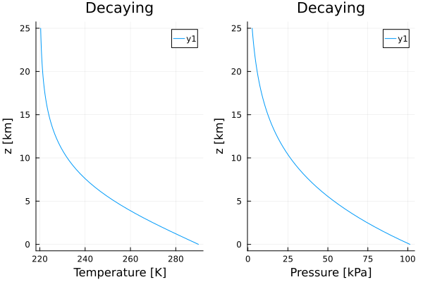

Atmospheric Temperature Profiles
Overview
The Thermodynamics.TemperatureProfiles module provides pre-defined atmospheric temperature profiles for testing and validation, and as reference states in atmosphere models. These profiles represent idealized atmospheric conditions used in climate modeling and testing.
Available Profiles
Three temperature profiles are currently available:
- IsothermalProfile: Constant temperature with height
- DecayingTemperatureProfile: Temperature decreases smoothly with height
- DryAdiabaticProfile: Temperature follows dry adiabatic lapse rate
Usage
Each profile constructor requires two arguments:
param_set: A thermodynamic parameter set from ClimaParams.jlz: Altitude (height above surface)
The profiles return both temperature and pressure as a function of altitude.
Isothermal Profile
A constant temperature profile, useful for testing thermodynamic calculations under uniform conditions.
import Thermodynamics as TD
import Plots
import ClimaParams as CP
import Thermodynamics.Parameters as TP
FT = Float64
param_set = TP.ThermodynamicsParameters(FT)
z = range(FT(0), stop = FT(2.5e4), length = 50);
isothermal = TD.TemperatureProfiles.IsothermalProfile(param_set, FT);
args = isothermal.(Ref(param_set), z);
T = first.(args);
p = last.(args);
p1 = Plots.plot(T, z./10^3, xlabel="Temperature [K]");
p2 = Plots.plot(p./10^3, z./10^3, xlabel="Pressure [kPa]");
Plots.plot(p1, p2, layout=(1,2), title="Isothermal", ylabel="z [km]");
Plots.savefig("isothermal.svg");
Decaying Temperature Profile
A profile where temperature decreases smoothly with height, representing typical atmospheric conditions.
import Thermodynamics as TD
import Plots
import ClimaParams as CP
import Thermodynamics.Parameters as TP
FT = Float64
param_set = TP.ThermodynamicsParameters(FT)
z = range(FT(0), stop = FT(2.5e4), length = 50);
decaying = TD.TemperatureProfiles.DecayingTemperatureProfile{FT}(param_set);
args = decaying.(Ref(param_set), z);
T = first.(args);
p = last.(args);
p1 = Plots.plot(T, z./10^3, xlabel="Temperature [K]");
p2 = Plots.plot(p./10^3, z./10^3, xlabel="Pressure [kPa]");
Plots.plot(p1, p2, layout=(1,2), ylabel="z [km]", title="Decaying");
Plots.savefig("decaying.svg");
Dry Adiabatic Profile
A profile following the dry adiabatic lapse rate (potential temperature constant with height) down to some minimum temperature.
import Thermodynamics as TD
import Plots
import ClimaParams as CP
import Thermodynamics.Parameters as TP
FT = Float64
param_set = TP.ThermodynamicsParameters(FT)
z = range(FT(0), stop = FT(2.5e4), length = 50);
dry_adiabatic = TD.TemperatureProfiles.DryAdiabaticProfile{FT}(param_set);
args = dry_adiabatic.(Ref(param_set), z)
T = first.(args)
p = last.(args)
θ_dry = TD.potential_temperature_given_pressure.(Ref(param_set), T, p)
p1 = Plots.plot(T, z./10^3, xlabel="Temperature [K]");
p2 = Plots.plot(p./10^3, z./10^3, xlabel="Pressure [kPa]");
p3 = Plots.plot(θ_dry, z./10^3, xlabel="Potential temperature [K]");
Plots.plot(p1, p2, p3, layout=(1,3), ylabel="z [km]", title="Dry adiabatic");
Plots.savefig("dry_adiabatic.svg");
Applications
These temperature profiles are useful for:
- Testing thermodynamic calculations under controlled conditions
- Serving as reference states in atmosphere models
- Benchmarking performance across different atmospheric conditions
- Educational purposes to understand atmospheric thermodynamics
Extending the Module
Additional temperature profiles can be added by:
- Creating a struct containing the parameters needed for the profile
- Implementing a functor that takes
(param_set, z)and returns(T, p)
Example structure:
struct CustomProfile{FT} <: TemperatureProfile{FT}
# Profile parameters
end
function (profile::CustomProfile{FT})(param_set, z) where {FT}
# Calculate T and p based on z
return (T, p)
end